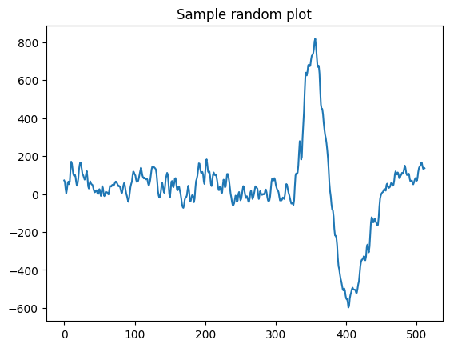
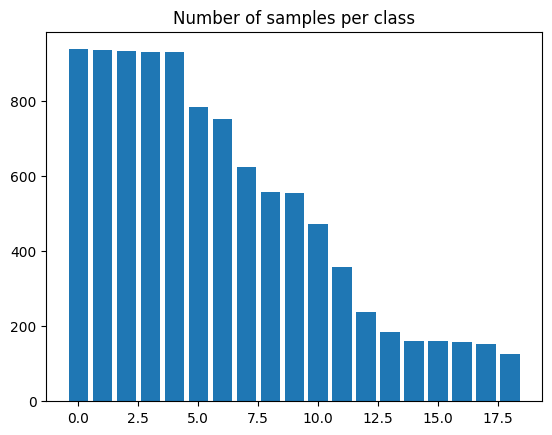
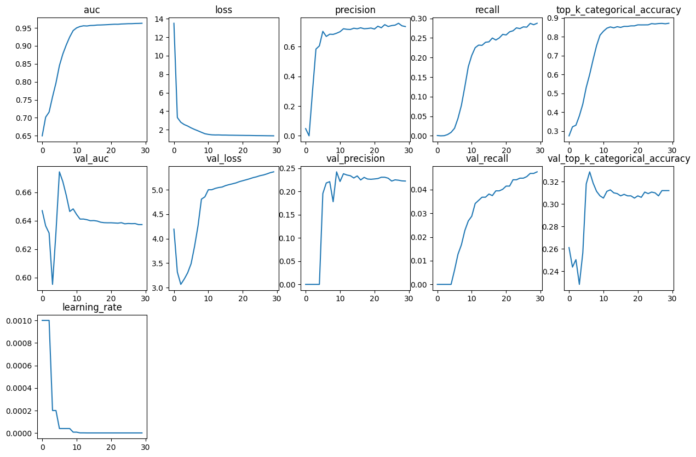
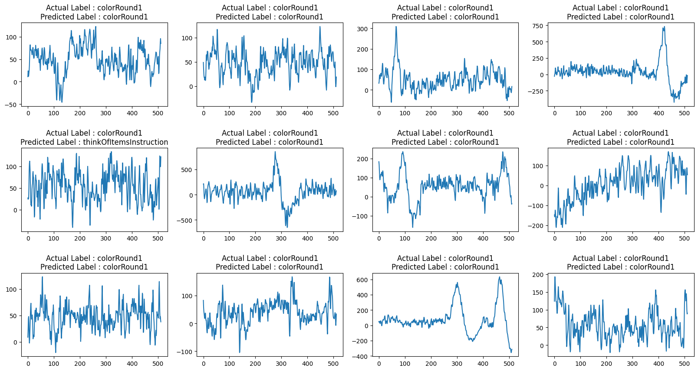

Electroencephalogram Signal Classification for action identification
Author: Suvaditya Mukherjee
Date created: 2022/11/03
Last modified: 2022/11/05
Description: Training a Convolutional model to classify EEG signals produced by exposure to certain stimuli.

Introduction
The following example explores how we can make a Convolution-based Neural Network to perform classification on Electroencephalogram signals captured when subjects were exposed to different stimuli. We train a model from scratch since such signal-classification models are fairly scarce in pre-trained format. The data we use is sourced from the UC Berkeley-Biosense Lab where the data was collected from 15 subjects at the same time. Our process is as follows:
- Load the UC Berkeley-Biosense Synchronized Brainwave Dataset
- Visualize random samples from the data
- Pre-process, collate and scale the data to finally make a
tf.data.Dataset - Prepare class weights in order to tackle major imbalances
- Create a Conv1D and Dense-based model to perform classification
- Define callbacks and hyperparameters
- Train the model
- Plot metrics from History and perform evaluation
This example needs the following external dependencies (Gdown, Scikit-learn, Pandas, Numpy, Matplotlib). You can install it via the following commands.
Gdown is an external package used to download large files from Google Drive. To know more, you can refer to its PyPi page here
Setup and Data Downloads
First, lets install our dependencies:
!pip install gdown -q
!pip install sklearn -q
!pip install pandas -q
!pip install numpy -q
!pip install matplotlib -q
Next, lets download our dataset. The gdown package makes it easy to download the data from Google Drive:
!gdown 1V5B7Bt6aJm0UHbR7cRKBEK8jx7lYPVuX
!# gdown will download eeg-data.csv onto the local drive for use. Total size of
!# eeg-data.csv is 105.7 MB
import pandas as pd
import matplotlib.pyplot as plt
import json
import numpy as np
import keras
from keras import layers
import tensorflow as tf
from sklearn import preprocessing, model_selection
import random
QUALITY_THRESHOLD = 128
BATCH_SIZE = 64
SHUFFLE_BUFFER_SIZE = BATCH_SIZE * 2
Downloading...
From (uriginal): https://drive.google.com/uc?id=1V5B7Bt6aJm0UHbR7cRKBEK8jx7lYPVuX
From (redirected): https://drive.google.com/uc?id=1V5B7Bt6aJm0UHbR7cRKBEK8jx7lYPVuX&confirm=t&uuid=4d50d1e7-44b5-4984-aa04-cb4e08803cb8
To: /home/fchollet/keras-io/scripts/tmp_3333846/eeg-data.csv
100%|█████████████████████████████████████████| 106M/106M [00:00<00:00, 259MB/s]
Read data from eeg-data.csv
We use the Pandas library to read the eeg-data.csv file and display the first 5 rows
using the .head() command
eeg = pd.read_csv("eeg-data.csv")
We remove unlabeled samples from our dataset as they do not contribute to the model. We
also perform a .drop() operation on the columns that are not required for training data
preparation
unlabeled_eeg = eeg[eeg["label"] == "unlabeled"]
eeg = eeg.loc[eeg["label"] != "unlabeled"]
eeg = eeg.loc[eeg["label"] != "everyone paired"]
eeg.drop(
[
"indra_time",
"Unnamed: 0",
"browser_latency",
"reading_time",
"attention_esense",
"meditation_esense",
"updatedAt",
"createdAt",
],
axis=1,
inplace=True,
)
eeg.reset_index(drop=True, inplace=True)
eeg.head()
| id | eeg_power | raw_values | signal_quality | label | |
|---|---|---|---|---|---|
| 0 | 7 | [56887.0, 45471.0, 20074.0, 5359.0, 22594.0, 7... | [99.0, 96.0, 91.0, 89.0, 91.0, 89.0, 87.0, 93.... | 0 | blinkInstruction |
| 1 | 5 | [11626.0, 60301.0, 5805.0, 15729.0, 4448.0, 33... | [23.0, 40.0, 64.0, 89.0, 86.0, 33.0, -14.0, -1... | 0 | blinkInstruction |
| 2 | 1 | [15777.0, 33461.0, 21385.0, 44193.0, 11741.0, ... | [41.0, 26.0, 16.0, 20.0, 34.0, 51.0, 56.0, 55.... | 0 | blinkInstruction |
| 3 | 13 | [311822.0, 44739.0, 19000.0, 19100.0, 2650.0, ... | [208.0, 198.0, 122.0, 84.0, 161.0, 249.0, 216.... | 0 | blinkInstruction |
| 4 | 4 | [687393.0, 10289.0, 2942.0, 9874.0, 1059.0, 29... | [129.0, 133.0, 114.0, 105.0, 101.0, 109.0, 99.... | 0 | blinkInstruction |
In the data, the samples recorded are given a score from 0 to 128 based on how well-calibrated the sensor was (0 being best, 200 being worst). We filter the values based on an arbitrary cutoff limit of 128.
def convert_string_data_to_values(value_string):
str_list = json.loads(value_string)
return str_list
eeg["raw_values"] = eeg["raw_values"].apply(convert_string_data_to_values)
eeg = eeg.loc[eeg["signal_quality"] < QUALITY_THRESHOLD]
eeg.head()
| id | eeg_power | raw_values | signal_quality | label | |
|---|---|---|---|---|---|
| 0 | 7 | [56887.0, 45471.0, 20074.0, 5359.0, 22594.0, 7... | [99.0, 96.0, 91.0, 89.0, 91.0, 89.0, 87.0, 93.... | 0 | blinkInstruction |
| 1 | 5 | [11626.0, 60301.0, 5805.0, 15729.0, 4448.0, 33... | [23.0, 40.0, 64.0, 89.0, 86.0, 33.0, -14.0, -1... | 0 | blinkInstruction |
| 2 | 1 | [15777.0, 33461.0, 21385.0, 44193.0, 11741.0, ... | [41.0, 26.0, 16.0, 20.0, 34.0, 51.0, 56.0, 55.... | 0 | blinkInstruction |
| 3 | 13 | [311822.0, 44739.0, 19000.0, 19100.0, 2650.0, ... | [208.0, 198.0, 122.0, 84.0, 161.0, 249.0, 216.... | 0 | blinkInstruction |
| 4 | 4 | [687393.0, 10289.0, 2942.0, 9874.0, 1059.0, 29... | [129.0, 133.0, 114.0, 105.0, 101.0, 109.0, 99.... | 0 | blinkInstruction |
Visualize one random sample from the data
We visualize one sample from the data to understand how the stimulus-induced signal looks like
def view_eeg_plot(idx):
data = eeg.loc[idx, "raw_values"]
plt.plot(data)
plt.title(f"Sample random plot")
plt.show()
view_eeg_plot(7)

Pre-process and collate data
There are a total of 67 different labels present in the data, where there are numbered sub-labels. We collate them under a single label as per their numbering and replace them in the data itself. Following this process, we perform simple Label encoding to get them in an integer format.
print("Before replacing labels")
print(eeg["label"].unique(), "\n")
print(len(eeg["label"].unique()), "\n")
eeg.replace(
{
"label": {
"blink1": "blink",
"blink2": "blink",
"blink3": "blink",
"blink4": "blink",
"blink5": "blink",
"math1": "math",
"math2": "math",
"math3": "math",
"math4": "math",
"math5": "math",
"math6": "math",
"math7": "math",
"math8": "math",
"math9": "math",
"math10": "math",
"math11": "math",
"math12": "math",
"thinkOfItems-ver1": "thinkOfItems",
"thinkOfItems-ver2": "thinkOfItems",
"video-ver1": "video",
"video-ver2": "video",
"thinkOfItemsInstruction-ver1": "thinkOfItemsInstruction",
"thinkOfItemsInstruction-ver2": "thinkOfItemsInstruction",
"colorRound1-1": "colorRound1",
"colorRound1-2": "colorRound1",
"colorRound1-3": "colorRound1",
"colorRound1-4": "colorRound1",
"colorRound1-5": "colorRound1",
"colorRound1-6": "colorRound1",
"colorRound2-1": "colorRound2",
"colorRound2-2": "colorRound2",
"colorRound2-3": "colorRound2",
"colorRound2-4": "colorRound2",
"colorRound2-5": "colorRound2",
"colorRound2-6": "colorRound2",
"colorRound3-1": "colorRound3",
"colorRound3-2": "colorRound3",
"colorRound3-3": "colorRound3",
"colorRound3-4": "colorRound3",
"colorRound3-5": "colorRound3",
"colorRound3-6": "colorRound3",
"colorRound4-1": "colorRound4",
"colorRound4-2": "colorRound4",
"colorRound4-3": "colorRound4",
"colorRound4-4": "colorRound4",
"colorRound4-5": "colorRound4",
"colorRound4-6": "colorRound4",
"colorRound5-1": "colorRound5",
"colorRound5-2": "colorRound5",
"colorRound5-3": "colorRound5",
"colorRound5-4": "colorRound5",
"colorRound5-5": "colorRound5",
"colorRound5-6": "colorRound5",
"colorInstruction1": "colorInstruction",
"colorInstruction2": "colorInstruction",
"readyRound1": "readyRound",
"readyRound2": "readyRound",
"readyRound3": "readyRound",
"readyRound4": "readyRound",
"readyRound5": "readyRound",
"colorRound1": "colorRound",
"colorRound2": "colorRound",
"colorRound3": "colorRound",
"colorRound4": "colorRound",
"colorRound5": "colorRound",
}
},
inplace=True,
)
print("After replacing labels")
print(eeg["label"].unique())
print(len(eeg["label"].unique()))
le = preprocessing.LabelEncoder() # Generates a look-up table
le.fit(eeg["label"])
eeg["label"] = le.transform(eeg["label"])
Before replacing labels
['blinkInstruction' 'blink1' 'blink2' 'blink3' 'blink4' 'blink5'
'relaxInstruction' 'relax' 'mathInstruction' 'math1' 'math2' 'math3'
'math4' 'math5' 'math6' 'math7' 'math8' 'math9' 'math10' 'math11'
'math12' 'musicInstruction' 'music' 'videoInstruction' 'video-ver1'
'thinkOfItemsInstruction-ver1' 'thinkOfItems-ver1' 'colorInstruction1'
'colorInstruction2' 'readyRound1' 'colorRound1-1' 'colorRound1-2'
'colorRound1-3' 'colorRound1-4' 'colorRound1-5' 'colorRound1-6'
'readyRound2' 'colorRound2-1' 'colorRound2-2' 'colorRound2-3'
'colorRound2-4' 'colorRound2-5' 'colorRound2-6' 'readyRound3'
'colorRound3-1' 'colorRound3-2' 'colorRound3-3' 'colorRound3-4'
'colorRound3-5' 'colorRound3-6' 'readyRound4' 'colorRound4-1'
'colorRound4-2' 'colorRound4-3' 'colorRound4-4' 'colorRound4-5'
'colorRound4-6' 'readyRound5' 'colorRound5-1' 'colorRound5-2'
'colorRound5-3' 'colorRound5-4' 'colorRound5-5' 'colorRound5-6'
'video-ver2' 'thinkOfItemsInstruction-ver2' 'thinkOfItems-ver2']
67
After replacing labels
['blinkInstruction' 'blink' 'relaxInstruction' 'relax' 'mathInstruction'
'math' 'musicInstruction' 'music' 'videoInstruction' 'video'
'thinkOfItemsInstruction' 'thinkOfItems' 'colorInstruction' 'readyRound'
'colorRound1' 'colorRound2' 'colorRound3' 'colorRound4' 'colorRound5']
19
We extract the number of unique classes present in the data
num_classes = len(eeg["label"].unique())
print(num_classes)
19
We now visualize the number of samples present in each class using a Bar plot.
plt.bar(range(num_classes), eeg["label"].value_counts())
plt.title("Number of samples per class")
plt.show()

Scale and split data
We perform a simple Min-Max scaling to bring the value-range between 0 and 1. We do not use Standard Scaling as the data does not follow a Gaussian distribution.
scaler = preprocessing.MinMaxScaler()
series_list = [
scaler.fit_transform(np.asarray(i).reshape(-1, 1)) for i in eeg["raw_values"]
]
labels_list = [i for i in eeg["label"]]
We now create a Train-test split with a 15% holdout set. Following this, we reshape the
data to create a sequence of length 512. We also convert the labels from their current
label-encoded form to a one-hot encoding to enable use of several different
keras.metrics functions.
x_train, x_test, y_train, y_test = model_selection.train_test_split(
series_list, labels_list, test_size=0.15, random_state=42, shuffle=True
)
print(
f"Length of x_train : {len(x_train)}\nLength of x_test : {len(x_test)}\nLength of y_train : {len(y_train)}\nLength of y_test : {len(y_test)}"
)
x_train = np.asarray(x_train).astype(np.float32).reshape(-1, 512, 1)
y_train = np.asarray(y_train).astype(np.float32).reshape(-1, 1)
y_train = keras.utils.to_categorical(y_train)
x_test = np.asarray(x_test).astype(np.float32).reshape(-1, 512, 1)
y_test = np.asarray(y_test).astype(np.float32).reshape(-1, 1)
y_test = keras.utils.to_categorical(y_test)
Length of x_train : 8460
Length of x_test : 1494
Length of y_train : 8460
Length of y_test : 1494
Prepare tf.data.Dataset
We now create a tf.data.Dataset from this data to prepare it for training. We also
shuffle and batch the data for use later.
train_dataset = tf.data.Dataset.from_tensor_slices((x_train, y_train))
test_dataset = tf.data.Dataset.from_tensor_slices((x_test, y_test))
train_dataset = train_dataset.shuffle(SHUFFLE_BUFFER_SIZE).batch(BATCH_SIZE)
test_dataset = test_dataset.batch(BATCH_SIZE)
Make Class Weights using Naive method
As we can see from the plot of number of samples per class, the dataset is imbalanced. Hence, we calculate weights for each class to make sure that the model is trained in a fair manner without preference to any specific class due to greater number of samples.
We use a naive method to calculate these weights, finding an inverse proportion of each class and using that as the weight.
vals_dict = {}
for i in eeg["label"]:
if i in vals_dict.keys():
vals_dict[i] += 1
else:
vals_dict[i] = 1
total = sum(vals_dict.values())
# Formula used - Naive method where
# weight = 1 - (no. of samples present / total no. of samples)
# So more the samples, lower the weight
weight_dict = {k: (1 - (v / total)) for k, v in vals_dict.items()}
print(weight_dict)
{1: 0.9872413100261201, 0: 0.975989551938919, 14: 0.9841269841269842, 13: 0.9061683745228049, 9: 0.9838255977496484, 8: 0.9059674502712477, 11: 0.9847297568816556, 10: 0.9063692987743621, 18: 0.9838255977496484, 17: 0.9057665260196905, 16: 0.9373116335141651, 15: 0.9065702230259193, 2: 0.9211372312638135, 12: 0.9525818766325096, 3: 0.9245529435402853, 4: 0.943841671689773, 5: 0.9641350210970464, 6: 0.981514968856741, 7: 0.9443439823186659}
Define simple function to plot all the metrics present in a keras.callbacks.History
object
def plot_history_metrics(history: keras.callbacks.History):
total_plots = len(history.history)
cols = total_plots // 2
rows = total_plots // cols
if total_plots % cols != 0:
rows += 1
pos = range(1, total_plots + 1)
plt.figure(figsize=(15, 10))
for i, (key, value) in enumerate(history.history.items()):
plt.subplot(rows, cols, pos[i])
plt.plot(range(len(value)), value)
plt.title(str(key))
plt.show()
Define function to generate Convolutional model
def create_model():
input_layer = keras.Input(shape=(512, 1))
x = layers.Conv1D(
filters=32, kernel_size=3, strides=2, activation="relu", padding="same"
)(input_layer)
x = layers.BatchNormalization()(x)
x = layers.Conv1D(
filters=64, kernel_size=3, strides=2, activation="relu", padding="same"
)(x)
x = layers.BatchNormalization()(x)
x = layers.Conv1D(
filters=128, kernel_size=5, strides=2, activation="relu", padding="same"
)(x)
x = layers.BatchNormalization()(x)
x = layers.Conv1D(
filters=256, kernel_size=5, strides=2, activation="relu", padding="same"
)(x)
x = layers.BatchNormalization()(x)
x = layers.Conv1D(
filters=512, kernel_size=7, strides=2, activation="relu", padding="same"
)(x)
x = layers.BatchNormalization()(x)
x = layers.Conv1D(
filters=1024,
kernel_size=7,
strides=2,
activation="relu",
padding="same",
)(x)
x = layers.BatchNormalization()(x)
x = layers.Dropout(0.2)(x)
x = layers.Flatten()(x)
x = layers.Dense(4096, activation="relu")(x)
x = layers.Dropout(0.2)(x)
x = layers.Dense(
2048, activation="relu", kernel_regularizer=keras.regularizers.L2()
)(x)
x = layers.Dropout(0.2)(x)
x = layers.Dense(
1024, activation="relu", kernel_regularizer=keras.regularizers.L2()
)(x)
x = layers.Dropout(0.2)(x)
x = layers.Dense(
128, activation="relu", kernel_regularizer=keras.regularizers.L2()
)(x)
output_layer = layers.Dense(num_classes, activation="softmax")(x)
return keras.Model(inputs=input_layer, outputs=output_layer)
Get Model summary
conv_model = create_model()
conv_model.summary()
Model: "functional_1"
┏━━━━━━━━━━━━━━━━━━━━━━━━━━━━━━━━━┳━━━━━━━━━━━━━━━━━━━━━━━━━━━┳━━━━━━━━━━━━┓ ┃ Layer (type) ┃ Output Shape ┃ Param # ┃ ┡━━━━━━━━━━━━━━━━━━━━━━━━━━━━━━━━━╇━━━━━━━━━━━━━━━━━━━━━━━━━━━╇━━━━━━━━━━━━┩ │ input_layer (InputLayer) │ (None, 512, 1) │ 0 │ ├─────────────────────────────────┼───────────────────────────┼────────────┤ │ conv1d (Conv1D) │ (None, 256, 32) │ 128 │ ├─────────────────────────────────┼───────────────────────────┼────────────┤ │ batch_normalization │ (None, 256, 32) │ 128 │ │ (BatchNormalization) │ │ │ ├─────────────────────────────────┼───────────────────────────┼────────────┤ │ conv1d_1 (Conv1D) │ (None, 128, 64) │ 6,208 │ ├─────────────────────────────────┼───────────────────────────┼────────────┤ │ batch_normalization_1 │ (None, 128, 64) │ 256 │ │ (BatchNormalization) │ │ │ ├─────────────────────────────────┼───────────────────────────┼────────────┤ │ conv1d_2 (Conv1D) │ (None, 64, 128) │ 41,088 │ ├─────────────────────────────────┼───────────────────────────┼────────────┤ │ batch_normalization_2 │ (None, 64, 128) │ 512 │ │ (BatchNormalization) │ │ │ ├─────────────────────────────────┼───────────────────────────┼────────────┤ │ conv1d_3 (Conv1D) │ (None, 32, 256) │ 164,096 │ ├─────────────────────────────────┼───────────────────────────┼────────────┤ │ batch_normalization_3 │ (None, 32, 256) │ 1,024 │ │ (BatchNormalization) │ │ │ ├─────────────────────────────────┼───────────────────────────┼────────────┤ │ conv1d_4 (Conv1D) │ (None, 16, 512) │ 918,016 │ ├─────────────────────────────────┼───────────────────────────┼────────────┤ │ batch_normalization_4 │ (None, 16, 512) │ 2,048 │ │ (BatchNormalization) │ │ │ ├─────────────────────────────────┼───────────────────────────┼────────────┤ │ conv1d_5 (Conv1D) │ (None, 8, 1024) │ 3,671,040 │ ├─────────────────────────────────┼───────────────────────────┼────────────┤ │ batch_normalization_5 │ (None, 8, 1024) │ 4,096 │ │ (BatchNormalization) │ │ │ ├─────────────────────────────────┼───────────────────────────┼────────────┤ │ dropout (Dropout) │ (None, 8, 1024) │ 0 │ ├─────────────────────────────────┼───────────────────────────┼────────────┤ │ flatten (Flatten) │ (None, 8192) │ 0 │ ├─────────────────────────────────┼───────────────────────────┼────────────┤ │ dense (Dense) │ (None, 4096) │ 33,558,528 │ ├─────────────────────────────────┼───────────────────────────┼────────────┤ │ dropout_1 (Dropout) │ (None, 4096) │ 0 │ ├─────────────────────────────────┼───────────────────────────┼────────────┤ │ dense_1 (Dense) │ (None, 2048) │ 8,390,656 │ ├─────────────────────────────────┼───────────────────────────┼────────────┤ │ dropout_2 (Dropout) │ (None, 2048) │ 0 │ ├─────────────────────────────────┼───────────────────────────┼────────────┤ │ dense_2 (Dense) │ (None, 1024) │ 2,098,176 │ ├─────────────────────────────────┼───────────────────────────┼────────────┤ │ dropout_3 (Dropout) │ (None, 1024) │ 0 │ ├─────────────────────────────────┼───────────────────────────┼────────────┤ │ dense_3 (Dense) │ (None, 128) │ 131,200 │ ├─────────────────────────────────┼───────────────────────────┼────────────┤ │ dense_4 (Dense) │ (None, 19) │ 2,451 │ └─────────────────────────────────┴───────────────────────────┴────────────┘
Total params: 48,989,651 (186.88 MB)
Trainable params: 48,985,619 (186.87 MB)
Non-trainable params: 4,032 (15.75 KB)
Define callbacks, optimizer, loss and metrics
We set the number of epochs at 30 after performing extensive experimentation. It was seen that this was the optimal number, after performing Early-Stopping analysis as well. We define a Model Checkpoint callback to make sure that we only get the best model weights. We also define a ReduceLROnPlateau as there were several cases found during experimentation where the loss stagnated after a certain point. On the other hand, a direct LRScheduler was found to be too aggressive in its decay.
epochs = 30
callbacks = [
keras.callbacks.ModelCheckpoint(
"best_model.keras", save_best_only=True, monitor="loss"
),
keras.callbacks.ReduceLROnPlateau(
monitor="val_top_k_categorical_accuracy",
factor=0.2,
patience=2,
min_lr=0.000001,
),
]
optimizer = keras.optimizers.Adam(amsgrad=True, learning_rate=0.001)
loss = keras.losses.CategoricalCrossentropy()
Compile model and call model.fit()
We use the Adam optimizer since it is commonly considered the best choice for
preliminary training, and was found to be the best optimizer.
We use CategoricalCrossentropy as the loss as our labels are in a one-hot-encoded form.
We define the TopKCategoricalAccuracy(k=3), AUC, Precision and Recall metrics to
further aid in understanding the model better.
conv_model.compile(
optimizer=optimizer,
loss=loss,
metrics=[
keras.metrics.TopKCategoricalAccuracy(k=3),
keras.metrics.AUC(),
keras.metrics.Precision(),
keras.metrics.Recall(),
],
)
conv_model_history = conv_model.fit(
train_dataset,
epochs=epochs,
callbacks=callbacks,
validation_data=test_dataset,
class_weight=weight_dict,
)
Epoch 1/30
8/133 ━[37m━━━━━━━━━━━━━━━━━━━ 1s 16ms/step - auc: 0.5550 - loss: 45.5990 - precision: 0.0183 - recall: 0.0049 - top_k_categorical_accuracy: 0.2154
WARNING: All log messages before absl::InitializeLog() is called are written to STDERR
I0000 00:00:1699421521.552287 4412 device_compiler.h:186] Compiled cluster using XLA! This line is logged at most once for the lifetime of the process.
W0000 00:00:1699421521.578522 4412 graph_launch.cc:671] Fallback to op-by-op mode because memset node breaks graph update
133/133 ━━━━━━━━━━━━━━━━━━━━ 0s 134ms/step - auc: 0.6119 - loss: 24.8582 - precision: 0.0465 - recall: 0.0022 - top_k_categorical_accuracy: 0.2479
W0000 00:00:1699421539.207966 4409 graph_launch.cc:671] Fallback to op-by-op mode because memset node breaks graph update
W0000 00:00:1699421541.374400 4408 graph_launch.cc:671] Fallback to op-by-op mode because memset node breaks graph update
W0000 00:00:1699421542.991471 4406 graph_launch.cc:671] Fallback to op-by-op mode because memset node breaks graph update
133/133 ━━━━━━━━━━━━━━━━━━━━ 44s 180ms/step - auc: 0.6122 - loss: 24.7734 - precision: 0.0466 - recall: 0.0022 - top_k_categorical_accuracy: 0.2481 - val_auc: 0.6470 - val_loss: 4.1950 - val_precision: 0.0000e+00 - val_recall: 0.0000e+00 - val_top_k_categorical_accuracy: 0.2610 - learning_rate: 0.0010
Epoch 2/30
133/133 ━━━━━━━━━━━━━━━━━━━━ 8s 63ms/step - auc: 0.6958 - loss: 3.5651 - precision: 0.0000e+00 - recall: 0.0000e+00 - top_k_categorical_accuracy: 0.3162 - val_auc: 0.6364 - val_loss: 3.3169 - val_precision: 0.0000e+00 - val_recall: 0.0000e+00 - val_top_k_categorical_accuracy: 0.2436 - learning_rate: 0.0010
Epoch 3/30
133/133 ━━━━━━━━━━━━━━━━━━━━ 8s 63ms/step - auc: 0.7068 - loss: 2.8805 - precision: 0.1910 - recall: 1.2846e-04 - top_k_categorical_accuracy: 0.3220 - val_auc: 0.6313 - val_loss: 3.0662 - val_precision: 0.0000e+00 - val_recall: 0.0000e+00 - val_top_k_categorical_accuracy: 0.2503 - learning_rate: 0.0010
Epoch 4/30
133/133 ━━━━━━━━━━━━━━━━━━━━ 8s 63ms/step - auc: 0.7370 - loss: 2.6265 - precision: 0.0719 - recall: 2.8215e-04 - top_k_categorical_accuracy: 0.3572 - val_auc: 0.5952 - val_loss: 3.1744 - val_precision: 0.0000e+00 - val_recall: 0.0000e+00 - val_top_k_categorical_accuracy: 0.2282 - learning_rate: 2.0000e-04
Epoch 5/30
133/133 ━━━━━━━━━━━━━━━━━━━━ 9s 65ms/step - auc: 0.7703 - loss: 2.4886 - precision: 0.3738 - recall: 0.0022 - top_k_categorical_accuracy: 0.4029 - val_auc: 0.6320 - val_loss: 3.3036 - val_precision: 0.0000e+00 - val_recall: 0.0000e+00 - val_top_k_categorical_accuracy: 0.2564 - learning_rate: 2.0000e-04
Epoch 6/30
133/133 ━━━━━━━━━━━━━━━━━━━━ 9s 66ms/step - auc: 0.8187 - loss: 2.3009 - precision: 0.6264 - recall: 0.0082 - top_k_categorical_accuracy: 0.4852 - val_auc: 0.6743 - val_loss: 3.4905 - val_precision: 0.1957 - val_recall: 0.0060 - val_top_k_categorical_accuracy: 0.3179 - learning_rate: 4.0000e-05
Epoch 7/30
133/133 ━━━━━━━━━━━━━━━━━━━━ 8s 63ms/step - auc: 0.8577 - loss: 2.1272 - precision: 0.6079 - recall: 0.0307 - top_k_categorical_accuracy: 0.5553 - val_auc: 0.6674 - val_loss: 3.8436 - val_precision: 0.2184 - val_recall: 0.0127 - val_top_k_categorical_accuracy: 0.3286 - learning_rate: 4.0000e-05
Epoch 8/30
133/133 ━━━━━━━━━━━━━━━━━━━━ 8s 63ms/step - auc: 0.8875 - loss: 1.9671 - precision: 0.6614 - recall: 0.0580 - top_k_categorical_accuracy: 0.6400 - val_auc: 0.6577 - val_loss: 4.2607 - val_precision: 0.2212 - val_recall: 0.0167 - val_top_k_categorical_accuracy: 0.3186 - learning_rate: 4.0000e-05
Epoch 9/30
133/133 ━━━━━━━━━━━━━━━━━━━━ 8s 63ms/step - auc: 0.9143 - loss: 1.7926 - precision: 0.6770 - recall: 0.0992 - top_k_categorical_accuracy: 0.7189 - val_auc: 0.6465 - val_loss: 4.8088 - val_precision: 0.1780 - val_recall: 0.0228 - val_top_k_categorical_accuracy: 0.3112 - learning_rate: 4.0000e-05
Epoch 10/30
133/133 ━━━━━━━━━━━━━━━━━━━━ 8s 63ms/step - auc: 0.9347 - loss: 1.6323 - precision: 0.6741 - recall: 0.1508 - top_k_categorical_accuracy: 0.7832 - val_auc: 0.6483 - val_loss: 4.8556 - val_precision: 0.2424 - val_recall: 0.0268 - val_top_k_categorical_accuracy: 0.3072 - learning_rate: 8.0000e-06
Epoch 11/30
133/133 ━━━━━━━━━━━━━━━━━━━━ 9s 64ms/step - auc: 0.9442 - loss: 1.5469 - precision: 0.6985 - recall: 0.1855 - top_k_categorical_accuracy: 0.8095 - val_auc: 0.6443 - val_loss: 5.0003 - val_precision: 0.2216 - val_recall: 0.0288 - val_top_k_categorical_accuracy: 0.3052 - learning_rate: 8.0000e-06
Epoch 12/30
133/133 ━━━━━━━━━━━━━━━━━━━━ 9s 64ms/step - auc: 0.9490 - loss: 1.4935 - precision: 0.7196 - recall: 0.2063 - top_k_categorical_accuracy: 0.8293 - val_auc: 0.6411 - val_loss: 5.0008 - val_precision: 0.2383 - val_recall: 0.0341 - val_top_k_categorical_accuracy: 0.3112 - learning_rate: 1.6000e-06
Epoch 13/30
133/133 ━━━━━━━━━━━━━━━━━━━━ 9s 65ms/step - auc: 0.9514 - loss: 1.4739 - precision: 0.7071 - recall: 0.2147 - top_k_categorical_accuracy: 0.8371 - val_auc: 0.6411 - val_loss: 5.0279 - val_precision: 0.2356 - val_recall: 0.0355 - val_top_k_categorical_accuracy: 0.3126 - learning_rate: 1.6000e-06
Epoch 14/30
133/133 ━━━━━━━━━━━━━━━━━━━━ 2s 14ms/step - auc: 0.9512 - loss: 1.4739 - precision: 0.7102 - recall: 0.2141 - top_k_categorical_accuracy: 0.8349 - val_auc: 0.6407 - val_loss: 5.0457 - val_precision: 0.2340 - val_recall: 0.0368 - val_top_k_categorical_accuracy: 0.3099 - learning_rate: 1.0000e-06
Epoch 15/30
133/133 ━━━━━━━━━━━━━━━━━━━━ 9s 64ms/step - auc: 0.9533 - loss: 1.4524 - precision: 0.7206 - recall: 0.2240 - top_k_categorical_accuracy: 0.8421 - val_auc: 0.6400 - val_loss: 5.0557 - val_precision: 0.2292 - val_recall: 0.0368 - val_top_k_categorical_accuracy: 0.3092 - learning_rate: 1.0000e-06
Epoch 16/30
133/133 ━━━━━━━━━━━━━━━━━━━━ 8s 63ms/step - auc: 0.9536 - loss: 1.4489 - precision: 0.7201 - recall: 0.2218 - top_k_categorical_accuracy: 0.8367 - val_auc: 0.6401 - val_loss: 5.0850 - val_precision: 0.2336 - val_recall: 0.0382 - val_top_k_categorical_accuracy: 0.3072 - learning_rate: 1.0000e-06
Epoch 17/30
133/133 ━━━━━━━━━━━━━━━━━━━━ 8s 63ms/step - auc: 0.9542 - loss: 1.4429 - precision: 0.7207 - recall: 0.2353 - top_k_categorical_accuracy: 0.8404 - val_auc: 0.6397 - val_loss: 5.1047 - val_precision: 0.2249 - val_recall: 0.0375 - val_top_k_categorical_accuracy: 0.3086 - learning_rate: 1.0000e-06
Epoch 18/30
133/133 ━━━━━━━━━━━━━━━━━━━━ 8s 63ms/step - auc: 0.9547 - loss: 1.4353 - precision: 0.7195 - recall: 0.2323 - top_k_categorical_accuracy: 0.8455 - val_auc: 0.6389 - val_loss: 5.1215 - val_precision: 0.2305 - val_recall: 0.0395 - val_top_k_categorical_accuracy: 0.3072 - learning_rate: 1.0000e-06
Epoch 19/30
133/133 ━━━━━━━━━━━━━━━━━━━━ 8s 63ms/step - auc: 0.9554 - loss: 1.4271 - precision: 0.7254 - recall: 0.2326 - top_k_categorical_accuracy: 0.8492 - val_auc: 0.6386 - val_loss: 5.1395 - val_precision: 0.2269 - val_recall: 0.0395 - val_top_k_categorical_accuracy: 0.3072 - learning_rate: 1.0000e-06
Epoch 20/30
133/133 ━━━━━━━━━━━━━━━━━━━━ 8s 63ms/step - auc: 0.9559 - loss: 1.4221 - precision: 0.7248 - recall: 0.2471 - top_k_categorical_accuracy: 0.8439 - val_auc: 0.6385 - val_loss: 5.1655 - val_precision: 0.2264 - val_recall: 0.0402 - val_top_k_categorical_accuracy: 0.3052 - learning_rate: 1.0000e-06
Epoch 21/30
133/133 ━━━━━━━━━━━━━━━━━━━━ 8s 64ms/step - auc: 0.9565 - loss: 1.4170 - precision: 0.7169 - recall: 0.2421 - top_k_categorical_accuracy: 0.8543 - val_auc: 0.6385 - val_loss: 5.1851 - val_precision: 0.2271 - val_recall: 0.0415 - val_top_k_categorical_accuracy: 0.3072 - learning_rate: 1.0000e-06
Epoch 22/30
133/133 ━━━━━━━━━━━━━━━━━━━━ 8s 63ms/step - auc: 0.9577 - loss: 1.4029 - precision: 0.7305 - recall: 0.2518 - top_k_categorical_accuracy: 0.8536 - val_auc: 0.6384 - val_loss: 5.2043 - val_precision: 0.2279 - val_recall: 0.0415 - val_top_k_categorical_accuracy: 0.3059 - learning_rate: 1.0000e-06
Epoch 23/30
133/133 ━━━━━━━━━━━━━━━━━━━━ 8s 63ms/step - auc: 0.9574 - loss: 1.4048 - precision: 0.7285 - recall: 0.2575 - top_k_categorical_accuracy: 0.8527 - val_auc: 0.6382 - val_loss: 5.2247 - val_precision: 0.2308 - val_recall: 0.0442 - val_top_k_categorical_accuracy: 0.3106 - learning_rate: 1.0000e-06
Epoch 24/30
133/133 ━━━━━━━━━━━━━━━━━━━━ 8s 63ms/step - auc: 0.9579 - loss: 1.3998 - precision: 0.7426 - recall: 0.2588 - top_k_categorical_accuracy: 0.8503 - val_auc: 0.6386 - val_loss: 5.2479 - val_precision: 0.2308 - val_recall: 0.0442 - val_top_k_categorical_accuracy: 0.3092 - learning_rate: 1.0000e-06
Epoch 25/30
133/133 ━━━━━━━━━━━━━━━━━━━━ 8s 63ms/step - auc: 0.9585 - loss: 1.3918 - precision: 0.7348 - recall: 0.2609 - top_k_categorical_accuracy: 0.8607 - val_auc: 0.6378 - val_loss: 5.2648 - val_precision: 0.2287 - val_recall: 0.0448 - val_top_k_categorical_accuracy: 0.3106 - learning_rate: 1.0000e-06
Epoch 26/30
133/133 ━━━━━━━━━━━━━━━━━━━━ 8s 63ms/step - auc: 0.9587 - loss: 1.3881 - precision: 0.7425 - recall: 0.2669 - top_k_categorical_accuracy: 0.8544 - val_auc: 0.6380 - val_loss: 5.2877 - val_precision: 0.2226 - val_recall: 0.0448 - val_top_k_categorical_accuracy: 0.3099 - learning_rate: 1.0000e-06
Epoch 27/30
133/133 ━━━━━━━━━━━━━━━━━━━━ 8s 63ms/step - auc: 0.9590 - loss: 1.3834 - precision: 0.7469 - recall: 0.2665 - top_k_categorical_accuracy: 0.8599 - val_auc: 0.6379 - val_loss: 5.3021 - val_precision: 0.2252 - val_recall: 0.0455 - val_top_k_categorical_accuracy: 0.3072 - learning_rate: 1.0000e-06
Epoch 28/30
133/133 ━━━━━━━━━━━━━━━━━━━━ 8s 64ms/step - auc: 0.9597 - loss: 1.3763 - precision: 0.7600 - recall: 0.2701 - top_k_categorical_accuracy: 0.8628 - val_auc: 0.6380 - val_loss: 5.3241 - val_precision: 0.2244 - val_recall: 0.0469 - val_top_k_categorical_accuracy: 0.3119 - learning_rate: 1.0000e-06
Epoch 29/30
133/133 ━━━━━━━━━━━━━━━━━━━━ 8s 63ms/step - auc: 0.9601 - loss: 1.3692 - precision: 0.7549 - recall: 0.2761 - top_k_categorical_accuracy: 0.8634 - val_auc: 0.6372 - val_loss: 5.3494 - val_precision: 0.2229 - val_recall: 0.0469 - val_top_k_categorical_accuracy: 0.3119 - learning_rate: 1.0000e-06
Epoch 30/30
133/133 ━━━━━━━━━━━━━━━━━━━━ 8s 63ms/step - auc: 0.9604 - loss: 1.3694 - precision: 0.7447 - recall: 0.2723 - top_k_categorical_accuracy: 0.8648 - val_auc: 0.6372 - val_loss: 5.3667 - val_precision: 0.2226 - val_recall: 0.0475 - val_top_k_categorical_accuracy: 0.3119 - learning_rate: 1.0000e-06
Visualize model metrics during training
We use the function defined above to see model metrics during training.
plot_history_metrics(conv_model_history)

Evaluate model on test data
loss, accuracy, auc, precision, recall = conv_model.evaluate(test_dataset)
print(f"Loss : {loss}")
print(f"Top 3 Categorical Accuracy : {accuracy}")
print(f"Area under the Curve (ROC) : {auc}")
print(f"Precision : {precision}")
print(f"Recall : {recall}")
def view_evaluated_eeg_plots(model):
start_index = random.randint(10, len(eeg))
end_index = start_index + 11
data = eeg.loc[start_index:end_index, "raw_values"]
data_array = [scaler.fit_transform(np.asarray(i).reshape(-1, 1)) for i in data]
data_array = [np.asarray(data_array).astype(np.float32).reshape(-1, 512, 1)]
original_labels = eeg.loc[start_index:end_index, "label"]
predicted_labels = np.argmax(model.predict(data_array, verbose=0), axis=1)
original_labels = [
le.inverse_transform(np.array(label).reshape(-1))[0]
for label in original_labels
]
predicted_labels = [
le.inverse_transform(np.array(label).reshape(-1))[0]
for label in predicted_labels
]
total_plots = 12
cols = total_plots // 3
rows = total_plots // cols
if total_plots % cols != 0:
rows += 1
pos = range(1, total_plots + 1)
fig = plt.figure(figsize=(20, 10))
for i, (plot_data, og_label, pred_label) in enumerate(
zip(data, original_labels, predicted_labels)
):
plt.subplot(rows, cols, pos[i])
plt.plot(plot_data)
plt.title(f"Actual Label : {og_label}\nPredicted Label : {pred_label}")
fig.subplots_adjust(hspace=0.5)
plt.show()
view_evaluated_eeg_plots(conv_model)
24/24 ━━━━━━━━━━━━━━━━━━━━ 0s 4ms/step - auc: 0.6438 - loss: 5.3150 - precision: 0.2589 - recall: 0.0565 - top_k_categorical_accuracy: 0.3281
Loss : 5.366718769073486
Top 3 Categorical Accuracy : 0.6372398138046265
Area under the Curve (ROC) : 0.222570538520813
Precision : 0.04752342775464058
Recall : 0.311914324760437
W0000 00:00:1699421785.101645 4408 graph_launch.cc:671] Fallback to op-by-op mode because memset node breaks graph update
